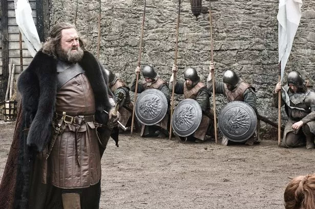

Welcome to the big boss contestants voting interface
Mark Addy
Vote for Contestant
Contestant Current Votes
123 Votes
Total Votes: 123/200
Biography of contestant
Ali Fazal (born 15 October 1986[1]) is an Indian actor and model who
primarily appears in Hindi films. He made his screen debut with a
small role in the English language film The Other End of the Line
before appearing in the American television miniseries Bollywood
Hero.[3] He was seen in films like Always Kabhi Kabhi (2011), Baat Ban
Gayi (2013), and Bobby Jasoos (2014). His first success came in Fukrey
(2013) and Sonali Cable (2014).
Fazal made his Bollywood debut with a cameo appearance in 3 Idiots
(2009) and next appeared in Always Kabhi Kabhi (2011). He played the
leading role in the horror film Khamoshiyan (2015) followed by his
first American film Furious 7 (2015), and Happy Bhag Jayegi opposite
Diana Penty in 2016. Fazal starred in the British-American film
Victoria & Abdul, which depicts the relationship of Queen Victoria
(Judi Dench) and her confidant, Indian servant Abdul Karim (Fazal).[4]
The film premiered at the Venice Film Festival in 2017.[5] The
costumes worn by the lead actors in the film have been added as part
of the official display at Osborne House.[6]
Fazal is popularly recognized for playing the character of Guddu
Pandit in the Amazon Prime Video crime thriller Mirzapur.